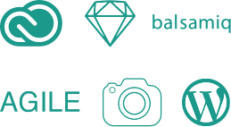

Vicente B.
-
Me llamo Vicente Boned. Soy ibicenco desde hace 27 años. Siempre he querido especializarme en el mundo del diseño, pero realmente metido llevo siete. Empecé estudiando en Badalona, Estudios Superiores de Diseño Gráfico. En el tercer año, me fué concedida la beca Erasmus, la cual disfruté en Namur, Bélgica.
A la vuelta, seguí mis estudios mientras trabajaba en un estudio justo en el centro de Barcelona, -
en el que podía realizar diversos proyectos, pero mi mayor dedicación fue la de community manager.
Acabados mis estudios, decidí aventurarme y conocer otra cultura y decí vivir una temporada en el extranjero. Después de casi un año de grandes experiencias, decidí volver para poder realizar el máster en diseño web que actualmente estoy cursando en la escuela “BAU”.
-
Estudios
Bachillerato artístico en “Escola d’Arts d’Eivissa”
Estudios superiores de diseño gráfico en “Pau Gargallo”
Máster en diseño web en "BAU"Conocimientos
 -
Experiencia
Ona gráfica Estudio
Desde 01/11/16
Branding, retoque fotográfico, editorial, diseño web.
Clientes
Reckitt Benckiser: Scholl, Durex, Calgon, Finish, Quantum, Strephen, Vanish, Cillit Bang, Veet, Gaviscon, Air Wick.
Larousse
Abril Et Nature
72Estudi
01/02/2014 - 01/07/2014
Community manager
Branding